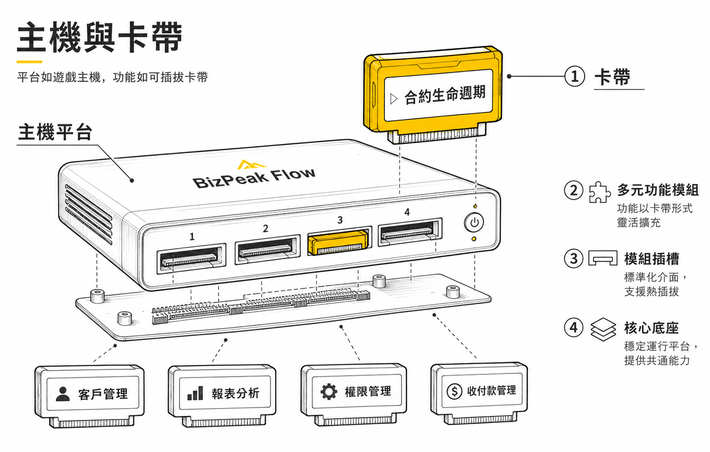
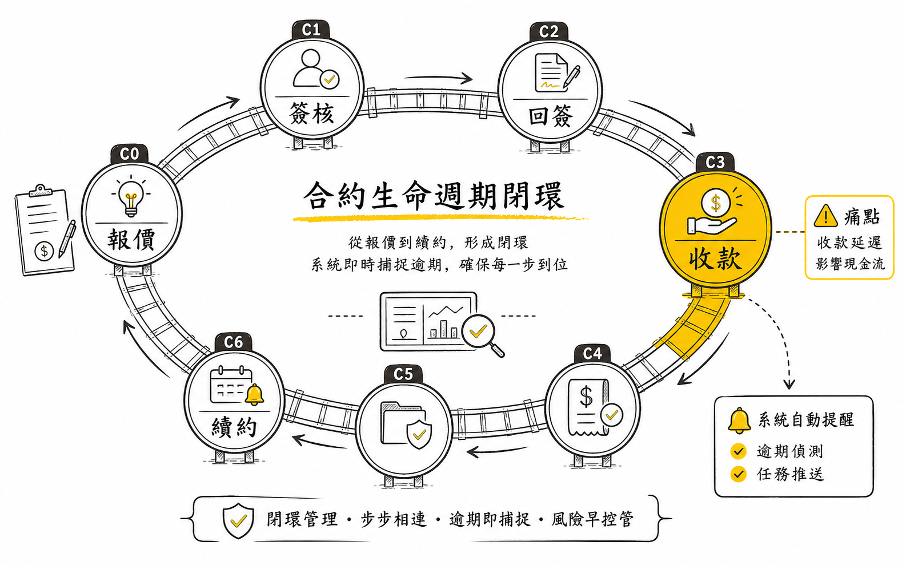
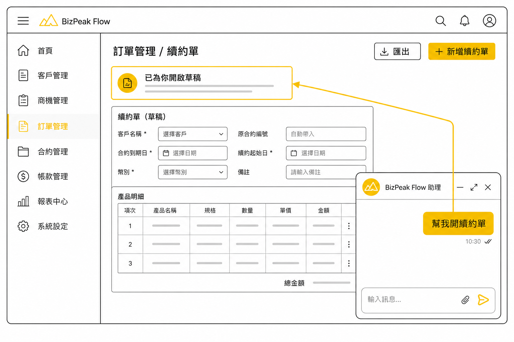
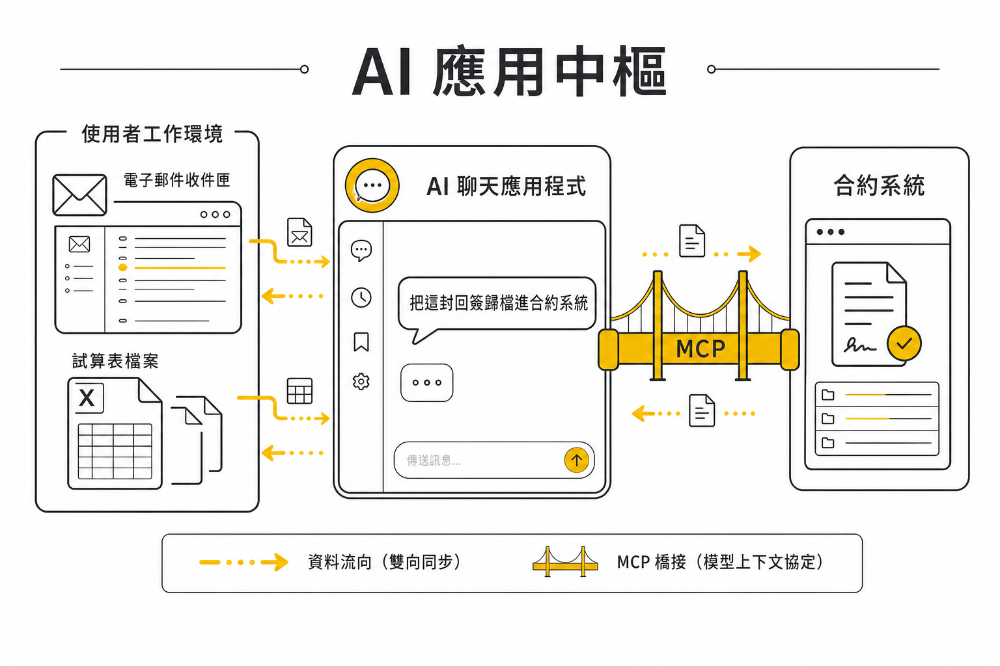

1
為什麼是現在
三個正在發生的損失
AI 原生的公司、合約流程卻是全公司自動化程度最低的一段。跨業務、行政、財務的簽核與收款流程從未頒布完整辦法。三個缺口正在發生：
01
發票寄了、款沒收、月底才發現
台北某客戶發票已寄出、款項未收、直到月底結帳才被發現。追蹤盲區最長 30 天、直接衝擊現金流。
來源 — 2026-07-02 立項會議
02
流程只在人的腦子裡
每位新人重新教一次、有人離職知識就跟著走。「簽核」「發票」「催收」在公司知識庫查無任何記錄 — 流程從未落成文件。
來源 — 內部知識庫全庫檢索
03
點狀工具、串不成流程
同仁各自做出好用的小工具、但缺乏共同規範、資料格式不一致 — 個別環節變快了、整條流程還是斷的。
來源 — 立項會議 · 風險盤點
2
產品定位 — 主機與卡帶
先解自己的痛、再把解法變產品
這個專案有兩層目標。第一層、把合約生命週期在公司內部完整打通；第二層、鋪一條主幹道 — 平台像遊戲主機一次建好、功能像卡帶即插即用。合約生命週期是卡帶 #1、未來的採購、廠商管理、每一個新流程都照同一規範接入（第 8 節）、直到成為可對外銷售的產品。

圖 1主機與卡帶 — 平台服務一次建好、功能模組即插即用
表 1品牌座標（依公司品牌架構：公司 → 品牌 → 產品）
| 層 | 名稱 | 備註 |
|---|
| 母品牌 | 方睿科技 FUNRAISE | 放大能力、釋放專業 |
| 事業群 | 生態系事業群「釋放專業」 | 與不動產事業群（PickPeak）平行 |
| 子品牌 | BizPeak | 產品命名 = BizPeak + 使用情境 |
| 產品 | BizPeak Flow（本提案） | 與 BizPeak Call / Chat / Studio（名稱 TBC）平行 |
| 共用接口 | Funraise MCP | 本產品體驗 2.0 的能力層、直接成為它的生態系資料拼圖 |
表 2憲法四條 — 不可退讓原則（全文見 CONSTITUTION.md）
| 條 | 原則 | 一句話 |
|---|
| 一 | Notion 是唯一真相來源 | 所有業務資料回 Notion；允許快取、不允許第二真相 |
| 二 | 能力先於介面 | 先做可程式呼叫的能力、再包介面 — 三種介面吃同一副骨 |
| 三 | 卡帶合規、主幹道不分岔 | 新功能一律以卡帶接入、過四件套契約 |
| 四 | 關鍵節點必有人 | 簽核、開票、對外信件必經人審 — 系統追到底、人負責拍板 |
3
合約生命週期
單向前進 · 退回留痕 · 每一步有人負責
狀態機依現行作業流程盤點設計：單向前進、退回留痕、樂觀鎖、狀態定義集中管理。每格帶 SLA 與負責人、每次轉移寫入事件記錄。點選狀態看細節：
終端分支：X1 作廢（留痕） · X2 不需寄出歸檔 ｜ 回簽後自動產生款項排程（P0-P4 子狀態機）

圖 2生命週期閉環 — 逾期款項在軌道上就被抓住（概念示意、精確狀態編號以上方狀態機為準）
逾期款項第一天就浮現。一約多期、款項子表掛在合約下、彙總直接餵現金流量預測；逾期觸發催收梯級（規則引擎、可依客戶分群配置）：
D+0 – 3自動提醒負責業務（個人入口 + 通知）
D+7代理起草催收信、業務確認後寄出 — 對外信件必經人審（憲法四）
D+60 – 90強制升級決策：正式催告 / 停止服務 / 委外。研究依據 — 逾期 90 天回收率約剩五成
4
三入口
同一套資料、每種角色看自己該看的
表 3入口設計（依立項會議決議）
| 入口 | 使用者 | 核心畫面 |
|---|
| 個人入口 | 業務（每位同仁） | 我的合約、我卡在哪一步（超 SLA 自動浮現）、我的催收任務 |
| 行政・財務入口 | 總務 · 會計 | 用印佇列、開票佇列、收款打勾、逾期款項表 |
| 管理層入口 | 經營層 · BU 主管 | 現金流量預測（預計付款日 × 金額）、全合約看板、逾期指標 |
BizPeak Flow
總覽用印佇列收款逾期
會計 · 財務入口
收款確認
今日到期 3本週 7逾期 2
| 合約 | 客戶 | 期數 | 發票號 | 預計付款日 | 金額 | 狀態 | |
|---|
| CT-2026-041 | 宏昇開發 | 2/3 | KA-33018274 | 07-02 | 240,000 | 已入帳・待確認 | |
| CT-2026-036 | 立誠水電工程 | 1/1 | KA-33018231 | 07-02 | 86,500 | 待付款 | |
| CT-2026-018 | 景富資產管理 | 3/4 | KA-33017902 | 06-20 | 312,000 | 逾期 D+12 | |
| CT-2026-044 | 祥豐置業 | 1/2 | — | 07-10 | 150,000 | 待開票 | |
| 本月已收 1,842,300 ／ 應收 2,588,800 · 資料同步 Notion 07-02 14:35 · 示意資料 |
畫面 1行政・財務入口 — 收款確認佇列（示意資料）。「已入帳・待確認」由對帳代理產生（第 5 節）、財務一鍵確認。
5
Agentic 差異化
系統代辦、人只拍板
傳統系統把狀態擺出來、提醒人去做。BizPeak Flow 把事情先做到只剩最後一個決定、人負責拍板。五個代理能力上線即含、每個動作都經人審、由信任橋接寫入。
表 4五個代理能力
| 代理能力 | 現況（人工） | BizPeak Flow（代理） |
|---|
| 回簽識別 | 有人看到統一信箱的信、轉給財務 | AI 判讀進信屬於哪張合約、抽取付款日與金額、自動落檔並通知 — 有疑義才找人 |
| 收款對帳 | 財務看銀行明細逐筆對、月底結帳 | 銀行入帳資料 → AI 比對款項排程 → 產生「建議打勾」清單、財務一鍵確認 |
| 催收代辦 | 業務想起來才追、信自己寫 | 代理依客戶分群起草催收信、附完整上下文、業務按一下送出 |
| 風險預警 | 逾期了才知道 | 依歷史付款行為預測逾期風險、開票前標記高風險客戶、建議調整付款條件 |
| 主動彙報 | 要人去查 | 代理在 Teams 主動說話、通知附操作 — 卡片上直接核准或升級 |
簽核也自立。自建簽核引擎：簽核鏈路由、代理人機制、Teams 卡片上批准、沿途留痕 — 簽核是主幹道的共用能力、每個卡帶都會用到。既有簽核系統保留為可選接口、政策要求的流程走 adapter 回接。
6
三階段體驗
換皮不換骨 — 三種介面吃同一個能力層
一套完整的合約管理系統：合約列表、生命週期追蹤、收款佇列、逾期看板。第 4 節「畫面 1」是財務視角；下面是業務看到的合約總覽、每張合約的生命週期進度一眼可見。
BizPeak Flow
合約收款逾期報表
業務 · 個人入口
我的合約進行中 11續約窗口 1卡關 1
| 合約 | 客戶 | 狀態 | 目前節點 | SLA | 金額 |
|---|
| CT-2026-041 | 宏昇開發 | C5 履約・收款 | 第 2 期已入帳待確認 | — | 720,000 |
| CT-2026-047 | 祥豐置業 | C1 內部簽核 | 卡在第二關 2 天 | 剩 1 天 | 450,000 |
| CT-2026-018 | 景富資產管理 | C5 逾期 D+12 | 催收信已起草、待你送出 | D+12 | 312,000 |
CT-2026-041 生命週期
C0C1C2C3C4C5C6C7
畫面 2個人入口 — 合約總覽與生命週期進度（示意資料）。卡關與逾期自動浮到最上面。
驗收判準一張真實合約從 C0 走到 C6 結案 — 全程狀態可查、通知真的送達、財務真的用它打勾收款。
同一套介面、右下角長出聊天框。你說一句話、介面自己動：導航到對應功能、開好表單、給你連結、你點過去確認。差別一眼可見 — 畫面和 1.0 幾乎相同、多的只有那個聊天框。
我的合約 11 筆進行中
| 合約 | 客戶 | 狀態 | 金額 |
|---|
| CT-2026-041 | 宏昇開發 | C5 · 11-30 到期 | 720,000 |
| CT-2026-047 | 祥豐置業 | C1 簽核中 | 450,000 |
續約草稿 自 CT-2026-041 帶入
改條件
助理看得懂整個系統
宏昇開發那張快到期了、幫我開續約單
找到 CT-2026-041、11-30 到期。正在為你開啟續約草稿…
草稿已就緒、條件已帶入 — 前往確認 → 確認後即送簽核。
輸入訊息…
畫面 3體驗 1.5 演示（自動播放）— 聊天一句話、左側導航切到「續約」、表單自動帶入、人確認後才送簽核。

圖 31.5 概念 — 聊天框操控背後的介面
驗收判準聊天框說一句話、介面完成導航與草稿、人審後入庫。
離開我們的介面、回到你慣用的 AI 助理。透過 Funraise MCP、你的信箱、你桌面的檔案、公司的合約系統在同一場對話裡協作 — 回簽信直接歸檔、報價試算直接更新、必要時把介面元件帶進聊天。
你慣用的 AI 助理已連接 funraise-mcp · 個人信箱 · 本機檔案
幫我看信箱、宏昇的回簽到了沒？到了就歸檔進合約系統
mail.search✓bizpeak.contract.attach_signback✓bizpeak.payment.schedule✓
找到 06-30 的回簽附件、已歸檔到 CT-2026-041。款項排程已建立（2 期）、第一期發票 07-15 到期 — 要現在通知財務開票嗎？
CT-2026-041 · 宏昇開發C4 → C5
回簽落檔06-30 · 已存證
第 1 期360,000 · 07-15 開票
第 2 期360,000 · 10-15 開票
好。順便把我桌面那份報價試算的新單價、更新進祥豐的草稿
files.read✓bizpeak.quote.update✓
已讀取試算表、單價 3,200 → 3,450、祥豐置業草稿已更新並標記「待你確認」— 確認後才會送簽核。
畫面 4體驗 2.0（示意）— 個人工作環境與公司系統在同一場對話協作、每個寫入動作留有人審關卡。

圖 42.0 概念 — AI 助理是中樞、MCP 橋接個人環境與公司系統
驗收判準在外部 AI 助理完成一次跨系統操作（信箱回簽 → 合約歸檔）、全程不開我們的介面。
7
轉移與嵌入
不搬家、先接管 — 大家的工具照用、系統疊在上面
導入失敗的第一名原因是要求大家換工具。BizPeak Flow 反過來：信箱照用、Teams 照用、報價單系統照用 — 系統把追蹤層疊在既有工具之上、只退役那些本來就是「補洞用」的表格與登記簿。點下面的切換、看同一批工具怎麼從「全部連到人」歸位成三層架構：
照用 — 系統嵌入
平台 — BIZPEAK FLOW
資料 — 唯一真相來源
退役・卡帶化
表 5工具去留判定（現用軟體以本週訪談最終確認）
| 工具 | 現況角色 | 去向 | 資料怎麼搬 |
|---|
| Outlook 信箱 | 回簽與往來信件、靠人看到 | 照用 — 回簽識別代理自動讀 | 回簽檔案自動落合約庫、不用搬 |
| Teams | 口頭轉達與訊息 | 照用 — 通知與簽核卡片進來、可直接操作 | 操作記錄落事件庫 |
| 報價單系統 | 產出後斷鏈 | 照用 — 輸出直接建 C0 | 報價資料自動帶入合約庫 |
| NuEIP | 內部簽核 | 降為可選接口 — 簽核引擎自建 | 政策要求的流程走接口回寫 |
| 網銀・會計系統 | 財務逐筆對明細 | 照用 — 入帳明細餵對帳代理 | 實收結果回寫款項庫 |
| Excel 逾期表 | 月底結帳才更新 | 退役 — 逾期看板取代 | 歷史資料一次性導入款項庫 |
| Excel 現金流表 | 手動彙整預計付款 | 退役 — 款項庫彙總自動產出 | 歷史資料一次性導入 |
| 用印登記簿 | 紙本登記、不可查 | 退役 — 用印佇列取代 | 掃描歸檔事件庫 |
| 同仁自製小工具 | 各自為政、格式不一 | 卡帶化 — 過四件套接入（L0 起步） | 資料契約登記卡帶註冊庫 |
第一步・存量導入AI 讀歷史合約與報價（檔案、信件）、抽取欄位建檔、人逐筆確認 — 半自動、不用任何人手動謄打
第二步・雙軌兩週新案 100% 進系統、進行中舊案跑完或搬入；既有表格凍結為唯讀、當對照組
第三步・退役與卡帶化訪談確認無遺漏後、舊表退場；個人小工具走 L0 卡帶註冊、好用的升級 L1
8
Agentic 作業泳道
誰做、AI 做什麼、規則管什麼、資料落在哪 — 一張圖
未來的一張合約這樣走完一生。六條泳道：客戶與同仁只出現在必要的節點；AI 代理做準備與追蹤；平台規則守狀態機與時限；每一步的資料都落回同一個 Notion 資料層（底部黃色泳道）— 這就是閉環。按「跑一張合約」看它從報價走到續約：
報價C0
簽核・用印C1–C2
寄出・回簽C3–C4
開票・收款C5
逾期・催收P4
結案・續約C6–C7
客戶
同仁業務・行政・財務
AI 代理
平台規則狀態機・SLA
外部工具
Notion 資料層唯一真相來源
⟲ 續約開新約 — 回到「報價」、閉環完成；每一步的資料都在同一個資料層
點任一節點看細節四類要素：深色邊 = 同仁動作（必經人審的節點）｜黃邊 = AI 代理｜灰邊 = 平台規則與工具｜黃底等寬 = 資料落庫
9
技術架構技術棧與 RD 定案
分層是定案、選型是建議
三件事是定案：能力層先行（三種介面吃同一套能力）、Notion 為資料權威源（憲法一）、獨立平台應用（與業務儀表板互鏈、主幹道要長期承載卡帶與對外產品化、必須獨立）。具體技術棧為建議、開發啟動前與 RD 團隊定案。
1.0 圖形介面三入口
1.5 內嵌聊天框操控同一介面
2.0 外部 AI 應用Funraise MCP
↓ 三種介面呼叫同一能力層 ↓
能力層contract.create · contract.transition · payment.mark_paid · cashflow.forecast …（函式 = REST = MCP 工具、卡帶接入面）
↓
平台服務狀態機引擎簽核引擎（自建）事件匯流排通知（失敗必出聲）催收規則代理執行環境排程信任橋接（AI 建議 → 人審 → 寫入）
↓
Notion — 權威源合約 / 款項 / 事件 / 卡帶註冊
⇄ 同步
快取・佇列層擋每秒 3 請求限流 · 唯讀快取、寫全回 Notion
外部接口（逐一有備援、任何失敗必告警）：報價單系統 · 回簽信箱 · Teams 通知 · 既有簽核系統（可選 adapter）
圖 5系統分層 — 分層為定案、方框內的實作技術與 RD 定案。
表 6技術棧建議（兩條路、開發前與 RD 定案）
| 路徑 | 組合 | 取捨 |
|---|
| A · 正式產品線 | 公司雲慣例（GCP）：Cloud Run + Cloud SQL / Firestore + Cloud Scheduler + Pub/Sub | 對齊 RD 既有維運能力、直接是商轉多租戶的地基；起步比 B 慢數天 |
| B · 快速原型 | Vercel + 輕量託管資料庫 | 一週內上線 dogfooding、驗證流程；商轉前需遷移、有一次搬家成本 |
建議
時程要求下週上線（第 10 節）— 建議 B 先行驗證流程、8 月 MCP 化時評估遷 A；若 RD 評估可直上 A、更好。能力層與資料層之間走介面隔離、兩條路的切換成本已在架構內控制。
為什麼獨立、而非併入既有業務儀表板
受眾不同：儀表板服務業務漏斗、本系統橫跨業務、行政、財務、權限敏感度更高。發布節奏綁在一起會互相拖累；未來對外銷售時、獨立程式庫直接可拆。
為什麼要有快取層、而非直連 Notion
Notion API 限流約每秒 3 請求 — 三入口同時使用會直接撞牆。快取層唯讀、寫入全回 Notion、權威源仍然只有一個（憲法一）。排程與服務跑在雲端、任何環節失敗必告警 — 排程跑在個人電腦上的單點風險、是這次盤點出的現役缺口之一。
10
卡帶規範
同仁的工具有軌道可接、也有關卡把守
同仁自己做（L0）、團隊覺得好用（L1）、公司採納（L2）。每級有明確驗收 — 做得好的工具從此接得進來。主機提供資料層、狀態機、簽核、事件、通知、三介面接入；卡帶只帶自己的業務邏輯。
表 7三級接入制
| 等級 | 誰能用 | 接入要求 | 審查 |
|---|
| L0 | 開發者本人 | Manifest + 不碰共用資料寫入 | 免審、註冊即用 |
| L1 | 單一團隊 / BU | 四件套齊 + 資料契約過註冊表檢查 | 卡帶負責人 + 平台維護者 |
| L2 | 全公司 | L1 全部 + 安全檢查 + 一次真實資料驗證 | 決策負責人拍板 |
表 8四件套接入契約（缺一不上主幹道）
| 件 | 內容 | 解掉什麼 |
|---|
| ① | Manifest — 名稱、有名有姓的負責人（離職必轉移）、等級、用到的資料、暴露的能力 | 全公司可查的戶口名簿 |
| ② | 資料契約 — 每個 Notion 欄位先註冊再動手、禁止影子欄位 | 「各單位資料格式不一致」的立項風險 |
| ③ | 能力層 — 每個動作 = 函式 + REST + MCP 工具；寫入一律經主機信任橋接 | 各工具自帶密鑰亂寫的安全洞 |
| ④ | 事件 — 卡帶之間只透過事件說話、不互相引用 | 模組耦合、一改全倒 |
11
成功指標
建議版、待拍板
表 9驗收指標 — 沒有指標、就無法判斷該擴張還是收
| 指標 | 現況 | 目標 |
|---|
| 收款追蹤覆蓋率 | 帳外追蹤、無系統 | 100%（每張發票在系統有狀態） |
| 逾期款項浮現延遲 | 月底結帳、最長 30 天 | D+1 自動浮現 |
| 回簽 → 財務收到通知 | 人工轉達、不定時 | 5 分鐘內 |
| 續約提醒觸發率 | 靠個人記憶 | 100%（到期前 60 天零漏網） |
| 財務月底對帳時間 | 約半天 | ≤ 1 小時（代理對帳 + 一鍵確認） |
| 新人上手時間 | 口耳相傳、逐案教 | ≤ 1 小時 |
| 卡帶合規接入 | — | 6 個月 ≥ 2 個 |
12
執行路線圖
下週上線、七月 dogfooding、八月 MCP 化
本週07-02 – 07-05規格定稿、架構定案
使用者訪談（行政、財務）、RD 技術棧定案、Notion 資料庫建置。
關卡第一張真實合約可建檔
下週07-06 – 07-12體驗 1.0 核心閉環上線
合約追蹤、收款佇列、通知矩陣 — 最小可用版直接上、真實合約開始在系統裡跑。
關卡真實合約 C0 起步、狀態全留痕
7 月中 – 月底07-13 – 07-31全員 dogfooding + 首批代理
業務、行政、財務全員上系統；回簽識別與收款對帳代理上線；1.5 聊天框開始長出來。規格隨真實使用滾動修正。
關卡財務真的用它收款、一句話開出續約草稿
8 月08-01 – 08-31MCP 化完成、商轉評估啟動
能力層 1:1 映射 Funraise MCP、外部 AI 助理可問可辦；同步啟動商轉評估（定價、目標客群、多租戶需求盤點）。
關卡外部 AI 助理完成真實跨系統操作
9 月起—產品化 BizPeak Flow
多租戶架構、簽章升級（點點簽 DottedSign 數位簽章）、對外銷售 — 不動產與 B2B 生態系夥伴為首波客群。
關卡第一個外部客戶上線
進度以關卡為準；dogfooding 期間的規格修正、優先於新功能。
13
團隊分工
依立項會議 · 兩位 RD 下週進場（人選待定）
表 10協作分工
| 成員 | 角色 |
|---|
| Nelsen Chen | 發起人 · COO — 方向與資源 |
| Philis Chen | 業務總經理 — 流程定義 |
| Allen Hung | 主導搭建 |
| Jaric Kuo | CTO — 技術棧定案、資源評估 |
| Carol Liao | 訪談協調 |
| Ting Chen · Glendy Lin | 總務 · 會計 — 關鍵使用者、受訪對象 |
| RD × 2 | 下週進場 — 人選待定 |
14
待拍板
提案通過前需要定案的事 — 其餘都可以先動
「BizPeak」品牌定位已對齊品牌架構 — 剩確認：「Flow」正式進 BizPeak 產品家族（現列 Call / Chat / Studio、名稱 TBC）。
Nelsen內部簽核深度已拍板自建簽核引擎 — 剩訪談：既有簽核系統 adapter 的必要範圍。
本週訪談技術棧定案路徑 A（GCP 主線）或 B（原型先行）— 本週與 RD 定案。
Jaric × RD對外簽署升級時機電子郵件回簽（現行基準）→ 點點簽 DottedSign 數位簽章（法律上推定本人簽署）的導入波次。
Philis × 法務通知通道優先序Teams / 電子郵件 / LINE 的主從 — 依真實工作場景定。
本週訪談程式庫歸屬已推 FunRaise-Team（private）— 剩確認：轉公開前的敏感內容清洗。
Nelsen